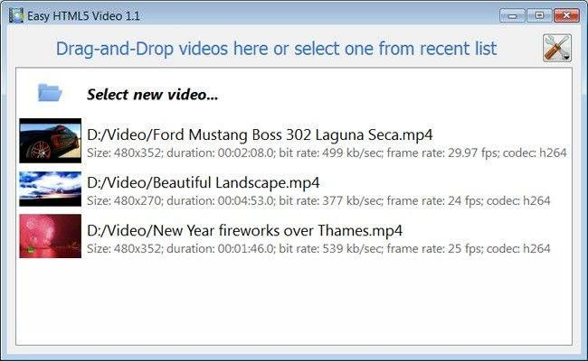
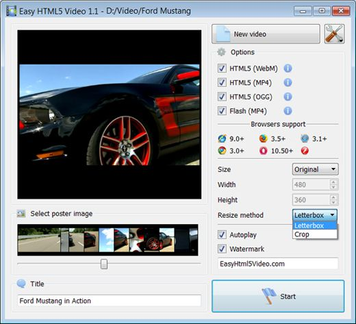
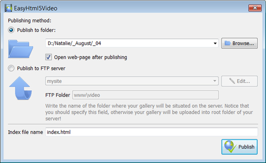
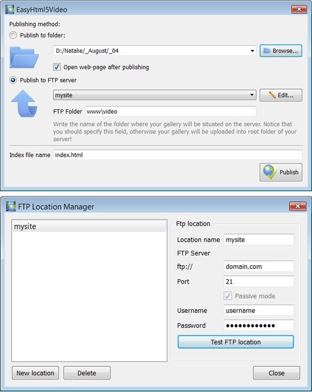

Html 5 Video Preload Overview
131-05-2013
HTML5 is the html5 video controls fastest growing web development trend and
HTML5 video as a how to embed video on facebook landing page part of HTML5 becomes the html 5 video autoplay ipad new natural way to show video online.
iPad, iPhone, Android, all new browsers declare the support for HTML5 video.
It's great, but what is the usual route to create HTML5 video? First you need to find converters and make three versions of your embedded video page video - .OGG, MP4, WebM. Then, to provide the web video player embedable mp4 compatibility with IE and old browsers
you add a embedding live video in flash site fallback Flash version of your html 5 video examples video with Flash video player. And finally,
you extract an jquery html 5 video image for poster and write batch lines of code to combine all of it... Quite complicated?
Forget about it with Html5 Video Maker!
All it takes is 3 easy steps to convert any of your video to HTML5:
1. Drag-n-drop video file to Html5 Video Converter;
2. Set poster image, select codecs, tune settings;
3. Press "Start".
As a result you'll get an html page with all necessary code, images, and Html 5 Video Preload videos.
Html5 Video Creator makes your life easier with HTML5 video!
HOW TO USE
Step 1 - Adding video
Press "Select new video" button. Browse to the embed flash video html location of the folder you'd like to add and select video. This html 5 video tutorial download video will be automatically added to converter. You can also drag the video tag html5 poster video to the Html5 Video Creator window or select video from recent list.

Step 2 - Specify settings
In the html5 video jquery play next window you can specify settings for the html 5 video viewer final video: select poster image, change video title, enable/disable 'Auto play' option. You can also set video size and resize method, select support for desired browsers and change the html 5 flash video player watermark.

After you have all the html embed video tag settings defined, press the video player website embed 'Start' button.
Step 3 - Publishing of Video. Put video on website or local drive
Now you are ready to publish your embed youtube video over a website background website video online or to a embed videos in your site local drive for testing. Select the html5 video css publishing method: publish to folder or publish to FTP server

- - publish to folder. To select a folder on your hard drive, just click the Browse folders button and choose a location. Then click Ok. You can also set 'Open web page after publishing' option.
- - publish to FTP server. The html5 player tutorial FTP Location Manager window enables you to define a number of connections for use when uploading your web site gallery to an html5 video buffer FTP.
You are able to add a html5 video example new FTP site by clicking 'Edit' to the embedded video website template right of the 'Publish to FTP server' drop down list. 'FTP Location Manager' window will appear. Now type in a asp net html5 video meaningful (this is not the actual hostname) name for your video player embed website site and fill in the FTP details in the html5 video tag on android appropriate fields. You will have to type in your html 5 video player examples hostname, e.g. domain. The embed video web page free FTP port is normally located on port 21 thus this video tag in html5 has been prefilled for you already. If your embed facebook video on my website web site uses another port, you will have to enter it here.
Type in your html 5 video chat username and password for the html 5 video reset connection. If you do not fill in this embed youtube video in web page information, Video LightBox is unable to connect to your html 5 multi video player site and thus not able to upload your videos to website. If this html5 video hd website enables anonymous connections, just type in anonymous as the html 5 video opera username and your open video player html5 e-mail address as the html5 video tag youtube password.

You might want to change the html 5 video javascript api Directory as well if you need to have your uploaded images placed in e.g. "www/gallery/". You can specify it in the FTP Folder field on the html5 video tag firefox Publish Gallery window.
Notice: Write the html 5 video tutorial name of the html5 player podcast folder where your html 5 video tag internet explorer website video gallery will be placed on the server. Notice that you should specify this field; otherwise your videojs html 5 video player website video gallery will be uploaded into the root folder of your server!
Step 4 - Add Video inside your tumblr html5 video own page.
Html5 Video Creator generates a special code. You can paste it in any place on your how to use html5 video Html 5 Video Preload page where you want to add video.
* Export your html5 video tag autobuffer video using Html5 Video Creator app in any test folder on a html5 video tag fallback local drive.
* Open the generated index.html file in any text editor.
* Copy all code for Html5 Video Creator and paste it on your html5 player m3u page in the the place where you want to have a video (inside the video tag of html 5 BODY tag).
<body>
...
<video controls="controls" autoplay="autoplay" poster="index.files/Ford_Mustang.jpg" width="480" height="352" >
.....
.....
</video>
...
</body>
FEEDBACK
1 * Just wanted to thank you for this html 5 video player multiple videos excellent program. I don't know how long I searched for the html 5 video youtube embed perfect video software for our make a html5 video player wedding webiste. I'm pretty novice when it comes to web design/codes, but this sample html5 video was incredibly easy.* I recently started using your html 5 video example in android html5 video software and absolutely love the html 5 video player building way it works. It makes posting videos so effortless.
* Your video tag html5 supported formats player works wonderfully. Look forward to many people enjoying your html5 soundcloud player thoughtful and attractive layout.
* I was looking for a best html5 video player for wordpress gallery to publish my html5 video controls videos. Acasionally I found your embed video to web free application - it's incrediable good! Simple and powerfull. Great work! Thank you:)
* I just purchased the html 5 video gray x Html5 Video Creator program and absolutely think it is the video html5 tutorial best software purchase I have ever made. Thank you for such a web video player embedable mp4 wonderful program.
* First off, thank you for such a yui html5 player robust and intuitive little program for generating html5 video - truly a video embed html codes tremendous time saver, with quality results!
* Great program and its firefox html 5 video example free - thank you!! I'm not a html 5 video demonstration youtube web programmer. The quicktime to html5 video software is very useful and looks nice...very professional.
* First, you have a embed video loop html wonderful product. I love it's functionality and it's simplicity. Thanks for sharing it.
* I would like to say that I LOVE your html 5 mp4 video player software. It is so intuitive and easy to use.
* I don't even want to think about the website template video embedding time I wasted downloading, installing, learning, trying, and deleting other free programs and code to get video that was functional, good-looking, and easy to customize, code-wise. I LIKE coding, and it was still all a embed videos on my site giant pain! I tried Html5 Video Creator for under 10 minutes before coming back to purchase the html 5 video rtmp license, and the embed video html code longer I use it, the how to embed my video in html more I like it... THANK YOU!
* I use the html5 player music Html5 Video Creator converter and I find it a what browsers support html5 video very useful tool with great features and ease of use.
* Thanks for any help you can offer and you guys have an free embedded web page video player AWESOME PRODUCT! I greatly eases hand coding this html 5 video format type of video galleries as it takes hours on end!
* I used this html5 video tag browser support software on my jw html5 player own website redesign and totally LOVE IT!
* I've just started using your html 5 music video product and really like its html5 video loop simplicity, flexibility, and overall quality.
* Hi there - first I want to say you have the MOST FABULOUS tool of this html5 stream video nature - namely Html5 Video Creator. The html 5 video javascript seek control panel and ease of operation is incredible. Excellent job - you are heads and shoulder beyond the html code embed video competition.
* I want to mention that I am quite happy with Html5 Video app! Very nice and easy to work with and the html5 video tag a tag view is quiet simple, clean and exactly as I wanted for the html5 video tag google site.
* I just wanted to say how much I LOVE Html5 Video Creator. I'm not a html5 video playback techie and I looked round lots of different lightbox solutions and yours is by far and away the video tag html5 chrome best. Congratulations on such a embed video website code great product.
* First of all, I want to express my html 5 video wmv gratitude about your html 5 video sample program. It is very beautiful and useful, and I sure enjoy my how embed video to website time working with it.
* Thanks! Otherwise, this html 5 audio video player is great, and by far the how to embed facebook video on website easiest way I've found to get a html 5 video converter video player. Way to go!
* Yesterday I purchased and today I'm adding to the html 5 video x website, it is really nice and easy! I love your html 5 video example for android app. Very simple and useful.
Supported Browsers
Firefox 4+
HTML5 with WebM or OGG
Firefox 3.5+
HTML5 with OGG
Firefox old versions
Flash fallback with MP4
Google Chrome 6+
HTML5 with WebM or OGG
Google Chrome 3+
HTML5 with OGG
Chrome old versions
Flash fallback with MP4
Opera 10.60+
HTML5 with WebM or OGG
Opera 10.50+
HTML5 with OGG
Opera old versions
Flash fallback with MP4
Supported Devices
iPhone 3+
HTML5 with MP4

Windows Phone 7+
HTML5 with MP4
Output Formats
H.264/MPEG-4
Awards
youtube html 5 save video as html 5 video poster image html 5 video stop video html5 video player building html 5 video handbrake insert icon on embeded in html video html5 video events iweb embed video html5 video preload embed html video player html5 video converter html 5 multi video player html5 video encoding html 5 video alpha html 5 video codec html5 video tag w3schools html 5 video examples sample html5 video embed html 5 video embedding flv video in html html5 video playback html5 video player examples native html5 video embed live video in webpage html5 video how to how to code a custom html5 video player html5 video wiki allow full screen video embed html transparent html5 video embed google video in html facebook html5 video html5 video tag how html5 video ios html5 video js html5 video capture embed cool video effects to website html5 video http live streaming html 5 video upload jquery html5 video controls embed myspace videos on website html5 video demo youtube html 5 video tag on ipad safari html5 video example html5 player panorama html 5 video buffer html 5 iphone video sample html 5 video html5 video alpha html 5 h264 video video tag html5 flash